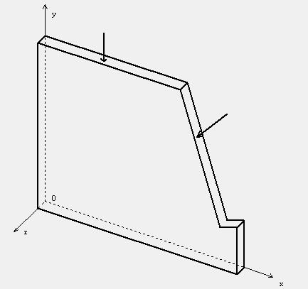
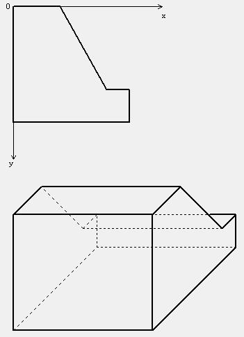

平面应力问题
只有平面应力分量( $σ_x$ $σ_y$ $τ_{xy}$ )存在,且仅为$x$ $y$的函数的弹性力学问题.这类问题的条件是:弹性体为等厚度的薄板(沿$z$向是等厚度$δ$)，体力 面力和约束都只有$x$ $y$ 平面内的量($f_x$ $f_y$ $\overline{f_x}$ $\overline{f_y}$ $\overline{u}$ $\overline{v}$) 且都不沿$z$向变化,并且面力和约束只作用于板边，在板面($z$ = $\pm$ $\frac δ2$)上没有任何面力和约束的作用。
平面应变问题
只有平面应变分量( $ε_x$ $ε_y$ $γ_{xy}$ )存在，且仅为$x$ $y$的函数的弹性力学问题。 这类问题的条件是:弹性体为常截面的很长柱体。体力,面力和约束条件与平面应力问题相似，只有$x$ $y$平面内的体力$f_x$ $f_y$ 面力$\overline{f_x}$ $\overline{f_y}$ 和约束$\overline{u}$ $\overline{v}$的作用，且都不沿$z$向变化。平面问题基本方程总结
平衡方程: $$ \frac{\partial σ_x}{\partial x} + \frac{\partial {τ_{xy}}}{\partial x} + f_x = 0$$ $$ \frac{\partial σ_y}{\partial y} + \frac{\partial {τ_{xy}}}{\partial x} + f_y = 0$$ 几何方程：$$ ε_x = \frac{\partial u}{\partial x} \quad ε_y = \frac{\partial v}{\partial y} \quad γ_{xy} = \frac{\partial u}{\partial x} + \frac{\partial v}{\partial y} $$ 物理方程：(平面应力问题) $$ ε_x = \frac 1E (σ_x - μσ_y) \quad ε_y = \frac {1}{E} (σ_y - μσ_x) \quad γ_{xy} = \frac {2(1+μ)}{E} τ_{xy} $$ 物理方程：(平面应变问题) $$ ε_x = \frac {1-μ^2}{E} (σ_x - \frac {μ}{1-μ}σ_y) \quad ε_y = \frac {1-μ^2}{E} (σ_y - \frac {μ}{1-μ} σ_x) \quad γ_{xy} = \frac {2(1+μ)}{E} τ_{xy} $$ 由平面应力到平面应变 $$ E \to \frac {E}{1-μ^2} \quad μ \to \frac{μ}{1-μ} $$

